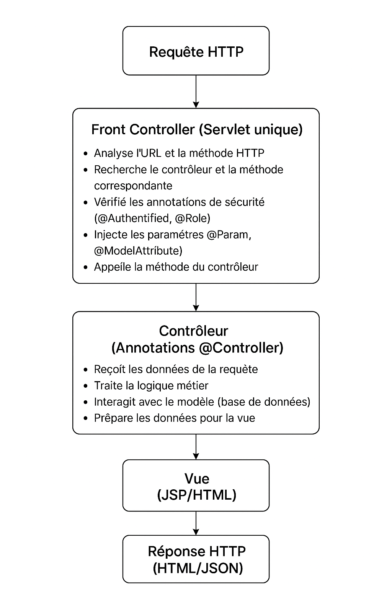

Framework MVC maison en Java avec annotations pour simplifier le développement web.
Notre framework suit une architecture MVC avec un FrontController central.

Diagramme illustrant l'architecture MVC du framework
package controller;
import controller.principal.*;
import annotation.*;
import tool.*;
import java.sql.Connection;
import java.sql.SQLException;
import models.*;
import connex.*;
@Controller
public class LoginController {
@Url(value="/app/login")
@Get()
public ModelAndView showFormulaire() {
ModelAndView mav = new ModelAndView("/views/login");
return mav;
}
@Url(value="/app/SubmitForm")
@Post()
public ModelAndView validateForm(@RequestParameter("email") String mailString,
@RequestParameter("password") String mdpString,
@ModelAttribute MySession mysession) throws ClassNotFoundException, SQLException {
Connection c = Connexion.getConnection();
Passager admin = new Passager(mailString, mdpString);
boolean isLogged = admin.login(c);
if (isLogged) {
mysession.add("userSessionKey",true);
mysession.add("userRole","admin");
return new ModelAndView("/views/accueil");
} else {
return new ModelAndView("/views/login");
}
}
}
Mapper les URLs, injecter les paramètres et gérer l'authentification facilement.
Système personnalisé MySession pour authentification et rôles.
Support des annotations de validation et MultiPart pour formulaires complexes.
Contrôle d'accès basé sur les rôles, protection CSRF et gestion centralisée des exceptions.
Support natif pour la création d'APIs RESTful avec sérialisation JSON automatique.
Système d'exceptions personnalisées et pages d'erreur configurables.
Connexion sécurisée avec email et mot de passe. Le système restreint l’accès aux fonctionnalités selon les rôles utilisateurs.
Gestion complète : création, lecture, mise à jour et suppression des vols avec toutes leurs informations.
Recherche flexible selon départ, arrivée, date et type de siège (Business ou Économique).
Annulation automatique des réservations non payées dans les délais. Paramétrage du délai de réservation avant départ.
Tarification flexible selon la date de réservation et le type de siège.
Page de paiement intégrée, statut de réservation mis à jour automatiquement selon les paiements effectués.
Annotations @Authentified et @Role pour gérer les permissions des utilisateurs.
Présentation vidéo de l’application Ticketing, illustrant les principales fonctionnalités en action.